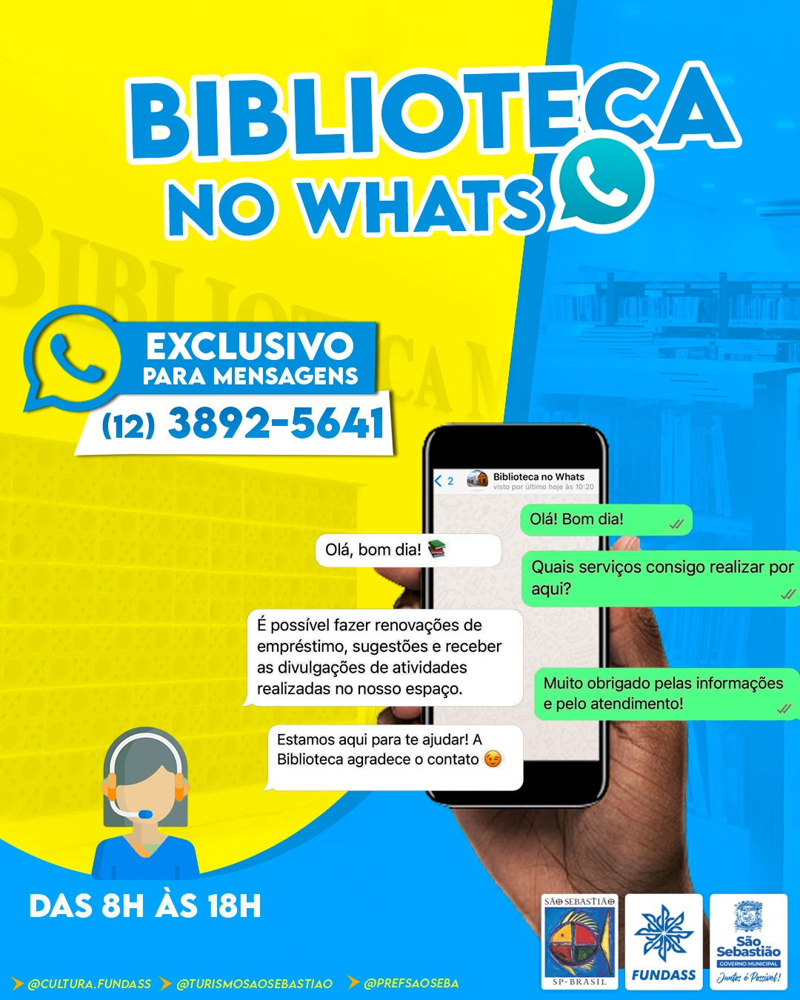

.jpeg)
Horário de Funcionamento: de segunda a sexta-feira, das 8h às 18h.
A nova Biblioteca e Videoteca Municipal Álvaro Dória Orselli – “Seu Alvinho” é um espaço totalmente climatizado e possui 355 metros quadrados, contando com aproximadamente 28.000 exemplares e mais de 60 estandes para abrigar todo o acervo, além de espaço para leitura, espaço de web pesquisa, ambiente lúdico para crianças, estacionamento e uma estrutura pensada na acessibilidade, assegurando o conforto e bem-estar do leitor, atento às normas de segurança. O local possui também acesso gratuito à Internet, com o intuito de auxiliar em trabalhos de pesquisas.
A videoteca possui modernos equipamentos de multimídia idealizados a encontros com autores, palestrantes, apresentações de filmes e documentários. O governo municipal em parceria com Governo do Estado de São Paulo realiza no espaço o programa Pontos MIS, com agendamentos de Cine Clubes Municipais.
Notícias
Vamos conversar!
Rua Manoel Rufino, nº 15, Centro Histórico
(12) 3892-5641
biblioteca@fundass.com.br
Como funcionamos
Perguntas Frequentes
Sim, a biblioteca é pública, portanto, tudo é gratuito.
Os visitantes e moradores podem usufruir da nova biblioteca, de segunda a sexta-feira, sempre das 8h às 18h. A Biblioteca e Videoteca Municipal fica na Rua Manoel Rufino, 15, Centro.
Sim, mas como o espaço é limitado, traga somente itens indispensáveis. O que não couber nos armários, não poderá ser guardado.
A Biblioteca Municipal de São Sebastião “Álvaro Dória Orselli – Seu Alvinho” disponibiliza um novo meio de comunicação para os munícipes leitores tirarem dúvidas e obterem informações sobre os serviços oferecidos pela Biblioteca.
Agora é possível fazer renovações de empréstimo, sugestões e receber as divulgações das atividades realizadas no espaço, por meio do número de WhatsApp (12) 3892-5641. O canal está disponível de segunda a sexta-feira, das 8h às 18h, exclusivamente para mensagens. O atendimento também pode ser feito por meio do telefone fixo (12) 3892-5641 e pelo e-mail biblioteca@fundass.com.br. A Biblioteca Municipal está localizada na Rua Manoel Rufino, 15, no Centro Histórico.
A Biblioteca Municipal de São Sebastião recebe com alegria doações de livros, materiais bibliográficos e audiovisuais. Quem avalia e decide para onde vai cada item é uma equipe de experientes funcionários. No entanto, existem materiais que são mais valiosos para nós. Quais são os materiais mais interessantes para as bibliotecas públicas?
São eles: livros de literatura, livros informativos atualizados (menos de 5 anos de publicação), primeiras edições de livros de literatura e exemplares autografados por seus autores, dentre outros.
E quais materiais não têm a ver com nosso acervo?
Livros didáticos, livros que não estão em bom estado de conservação (mofados, rasgados, sem capa, etc), fitas cassete e VHS, pois já estão obsoletos, jornais correntes, dentre outros.